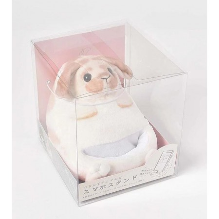

Considerations

Before you decide to have a rabbit, please consider the following:
- The life expectancy of a rabbit is usually between 8 and 12 years. You must be prepared for this kind of commitment.
- It is essential to spend time with your rabbit and interact with them on a daily basis. This can include talking to them and petting them. You should also pay attention to their physical condition and be aware of any signs of sickness.
- It is important to clean your rabbits' accessories (e.g. cages, water bottles, bedding) and refill their food daily to ensure good health.
- You need to budget beforehand for initial expenses like the cost of a new cage, accessories, food and hay and also for any medical treatment in the future.
- Your rabbit needs daily exercise to stay healthy; they need to come out of their cages for at least 4 hours a day to stay fit and active.
- Rabbits like biting! Therefore, please remember to remove any dangerous or valuable items before setting your rabbit free. If not, your rabbit may damage household items or bite electric wires and plants and swallow them.
- If your rabbit is sick, it should be treated by experienced veterinarians only.
- If you have other pets, please make sure that a rabbit is a suitable pet to bring home beforehand.
- Rabbits can reproduce quickly, if you are going to have more than one rabbit please either separate them or sterilize them to stop unwanted litters.
- Before bringing a pet home, confirm with your family first to make sure they are not allergic to animals.
 Behavior
Behavior
Eating own faeces
Rabbits have a very special digestive system; their appendix is involved in hind gut fermentation which transforms indigestible fiber to digestive nutrients. This process produces small round moist pellets called cecotropes. Rabbits eat them in order to absorb the nutrients from the cecotropes.
Chin rubbing
Rabbits have scent glands under their chin which produce a scent not detectable by humans. When rabbits rub their chin on objects or people the scent stays, this is how rabbits mark their territory.
Biting
Rabbits’ teeth grow continuously therefore they bite and chew to keep their teeth short. To avoid the rabbit biting your furniture or other objects, you could give hay-cubes, sticks or other untreated wooden toys to your rabbit.
Circling your feet
This is a courting act which indicates the rabbit is sexually mature. It also means the rabbit really likes you!
Dancing
Rabbits may jump up in the air and leap about suddenly, this means they are in a jubilant mood and very excited.
Digging holes
This is a basic instinct, wild rabbits dig holes for shelters and to trim their nails.
Thumping with hind leg
When a rabbit is terrified or threatened, it may hit the ground hard with its rear leg. This also communicates danger or a perceived threat to other rabbits nearby.
Thumping and pawing with front leg
Please do not put your hand near the rabbit because the rabbit is probably angry or irritated.
Teeth grinding
Gentle and soft grinding of teeth show that the rabbit is in a comfortable, happy and content mood. However, if it is loud, the rabbit may be in pain or suffering from an illness.
Loud teeth-grinding
Loud teeth grinding means that the rabbit is in pain, please take the rabbit to the vet for further examination.
Standing on rear legs
When a rabbit hears a suspicious sound, becomes cautious or alerted, they will stand on both back legs for a better view.
Screaming
A signal of a rabbit in pain or panicked; rabbits may scream also if they feel they are near death.
Flattening
A rabbit lying down on the ground relaxing with all legs extended outward shows that it feels safe.
Pushing people or things with their head
A rabbit is asking you to make way and let it past.
Bottom-facing
Rabbits protest with their bottoms facing towards the subjects.
Urine-marking
Rabbits will mark their territories by urine-marking, some even marking people.
Touching you with its nose
A rabbit wants to get your attention or wants to play with you.
Growling
Usually this is to express disapproval or anger.
Light-biting
If a rabbit bites you lightly it is warning you to stop what you are doing.
Leaning towards the cage or biting it
A rabbit is pleading you for something or wishes to be let out of the cage.
Licking
An expression of how much a rabbit likes you.
Waving its tail
A complacent act. A rabbit might swing its tail after you have failed to catch it.
Hair picking
Females will do this during a false pregnancy or around one week before giving birth.
Health
Check your rabbits’ body regularly as the sooner an injury or disease is discovered the sooner the rabbit can receive treatment.
Exercise
Although rabbits can be kept in large cages for many hours, they still need daily exercise. Therefore they should come out of their cage for around 4 hours every day, this facilitates the movement of their intestines and promotes good health.
Safety
Before you let your rabbit out, ensure that electric wires, plants, carpet or other accessories are properly stored to avoid the rabbit swallowing harmful substances.
Toys
Giving suitable rabbit friendly toys can boost their intelligence and promote mental and physical health. Toys can also provide excitement and stimuli to their lives which can help prevent them damaging furniture. Paper tubes or boxes, hard untreated wood, straw mats and hard toys for infants are some appropriate choices for rabbits.
Suitable room temperature for rabbit
During summer the room temperature should be kept below 25oC but this also depends on the air circulation of the room. If the weather is over 25 degrees you will need to air condition the room. You may also consider placing an ice-bag wrapped with a towel and placing it inside a metal box fixed to the side of the cage. This will prevent the rabbit suffering from heat stroke which can be fatal.


Most rabbits can endure cold weather much better than warm. However you can give warm water to rabbits if deemed necessary. You can place towels over their cage to keep them warm but leave one side open for air circulation. If the temperature drops suddenly you should pay more attention to see whether your rabbit stops drinking or loses it's appetite. This may suggest that your rabbit is struggling to adapt to an extreme change in temperature.
Considerations

 News
News
- (What's New)14 Apr 2023
Bun Bun Cha Fabric Bag Charity Sale - (What's New)13 Apr 2023
Where does HKRS Rabbit go? - (Events)01 Apr 2023
J.NC Workshop 2023年3月份寵物快閃拍攝 - (What's New)29 Mar 2023
天氣不穩定 兔協28隻兔仔集體患病 醫療費達6位數緊急籌款 - (Events)06 Mar 2023
乾燥花裝飾香氛義賣 - (Events)04 Mar 2023
全人手製兔兔香薰蠟燭義賣 - (Events)01 Mar 2023
Soul Chill Arts《3月份 Acrylic壓克力流體動物雕塑工作坊》
Adoption
-

Rabbit Name: Michi
Breed: Angora
Age: 3.5 years old
Personality: Active & Curious -

Rabbit Name: Luka
Breed: Mixed Dwarf
Age: 6 years old
Personality: Active & Curious -

Rabbit Name: Matic
Breed: Lionhead
Age: 6 years old
Personality: Shy & Playful
Online Shop
-
New

HKRS Timothy Hay Coupon
Price: $333
-
New

OHE Shoe Brush/Cleaning Brush (Rabbit)
Price: $62
-
Hot
日本BISQUE- Smartphone Stand (Rabbit)
Price: $220